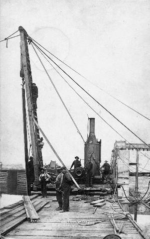

The Family Chronicle
No.62 February 23, 2004
________________

This photo shows a pile driver and crew on a dam site in Wausau, Wisconsin where dad worked in 1910 – the year he and Mum were married. I do not know if Dad is in the photo.
My father’s oldest sister, Venetia, married Robinson Lincoln Doring. The following obituary was taken from the Florida Advocate dated May 29, 1936.
Robinson Doring Dies at Bowling Green Home
Robinson L. Doring, 72, died at his residence west of Bowling Green on Wednesday after a lengthy illness. He was born in Perry, Maine April 24, 1864. Moving to Bowling Green in 1915, from Portland, Me., the deceased had lived there until his death.
Mr. Doring followed hydro-electric powerhouse, dam and paper mill construction as an engineer and general construction superintendent until retiring in 1930 at his Bowling Green home. His largest construction jobs were the Stevens Creek dam and powerhouse across the Savannah River above Augusta, Georgia; a large dirt dam and canal irrigation system in Idaho, and the construction during the World War in Amatol, N. J. of the most complete and largest ammunition loading plant and townsite in the United States.
Survivors are his widow, Mrs. Venetia G. Doring; a daughter, Miss Verna Elizabeth; two sons, Walter G. and John S. Doring all of Bowling Green, and two sisters, Mrs. Charles Shaw of Perry, Me., and Miss Jessie Doring, supervisor of …(Unable to read)
Funeral services were conducted from the residence of the deceased yesterday afternoon at 3 o’clock under the direction of Coker’s Funeral Home, of this city, with Rev. J.F. Clark, of Bowling Green officiating. Interment was in Bowling Green cemetery with the Masonic Order in Charge.
I decided to check out Amatol, New Jersey and found that construction of a plant and a townsite for 10,000 people commenced in March, 1918 and was completed in 9 months. The only one of the original buildings still standing is the former barracks of the New Jersey State Police on White Horse Pike. There was a major explosion at the plant on July 10, 1926 but fortunately it was a Saturday and few men were at work. I do not know if there was any rebuilding but, according to what I read, the town soon disappeared. Fascinating story !
Larry Brideau and John Paul were drowned at Victoria Bridge, Black River, on June 10, 1938. (Or was it 1937?) They were peeling pulpwood at Hexham and decided to go for a swim at the end of the day. I remember going down to the Victoria Bridge next day and seeing the raft and divers at the side of the Victoria Bridge.
Once again the sun is setting
And a year has passed away,
Since a boy cried: Come my comrades
We will go and swim today.
Down the hill young Larry bounded,
With the smile he always wore,
Never dreaming that ere sunset,
He would tread this earth no more.
Scarcely had he reached the water
When his cry for help we hear,
Comrades rushing there in horror,
Cried, he is doomed to die we fear.
But John Paul is to the rescue,
Nobly does he try to save;
But the Master’s call is urgent:
See! they sink beneath the wave.
Sadly now the bells are tolling,
In that valley far away,
Softly now our tears are falling,
For the ones who could not stay.
Tell his kindred in our memories,
We’ll retain this deed so brave,
For John Paul that worth-while comrade,
Fills a brave man’s honoured grave.
And the Master’s words we echo,
Neath the stars that shine so bright,
He who gives his life shall find it,
In that land of perfect light.
And young Larry will be waiting,
With the smile he always wore,
For the loved ones left behind him,
On that great and golden shore.
Black River, June 10th, 938
June 22, 1938 was a beautiful sunny summer day. I recall sitting under the apple tree in the front yard with Mum. Across the road, a few people gathered at Uncle Jim’s to listen to the radio. Uncle Jim had removed the lower sash of the kitchen window so the men could hear the broadcast better. It was a rematch between boxing great, Joe Louis, and Max Schmelling. Mum would not let me go across to listen although I could still hear from across the road.
Feelings ran high. Schmelling had beaten Louis in an earlier match. With the saber rattling in Germany, there was much anti-German sentiment.
Round one began; 2.08 minutes later the fight was over. Louis knocked out Schmelling. The fight was over. The men lingered for a few minutes and then went home.
The Chronicle is an occasional newsletter published by Don Glendenning It is designed to share information about my family, community and the times in which I grew up. While every effort is made to be accurate, errors are likely to occur. Comments, enquiries and information may be sent to 62 Queen Elizabeth Drive, Charlottetown, PEI, C1A 3A9. Tel: 902-892-5859 Email: don@glendenning.net Web: www.glendenning.net